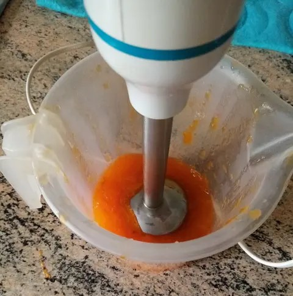
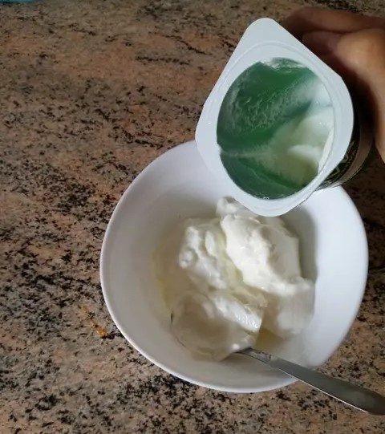
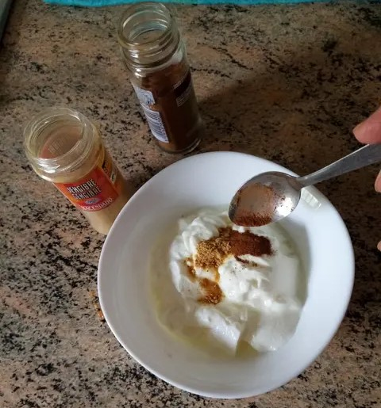
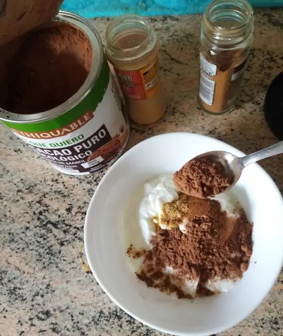
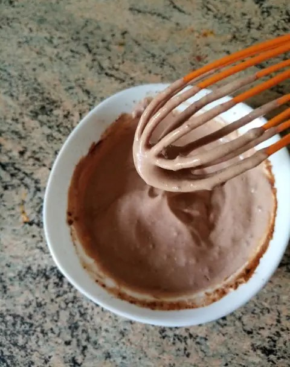
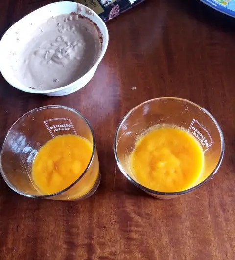
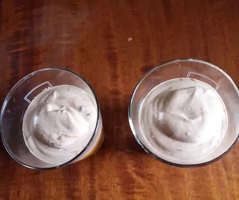
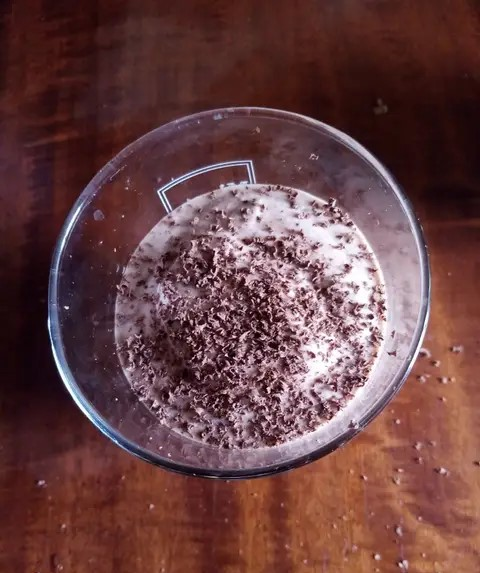
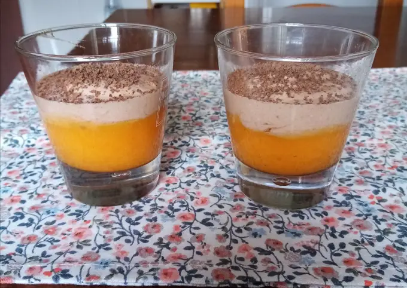

Primer paso:Pelamos el caqui y lo batimos bien con una batidora electrica.
Segundo paso:Por otro lado, en un bol deberemos de hechar el 1/2de yogurt natural.
Tercer paso:Ahora en el bol donde tenemos nuestro 1/2 de yogurt natural procederemos a hechar las especies 1/4 de jengibre, 1/4 de canela.
Cuarto paso:Una vez hechadas las especies, deberemos de hechar 1/4 o menos de cacao en polvo sin azucar.
Quinto paso:Debemos de batir bien la mezcla de especies y cacao, debera de tener una textura similar a esta:
Sexto paso:Cogemos unos vasos y repartimos el caqui triturado en un vaso (si sobra podemos ponerlo en otro), mas o menos que quede a medio vaso o un poco menos.
Septimo paso:Seguidamente, deberemos de coger la mezcla de 1/4 de jengibre, 1/4 de canela y 1/4 o menos de cacao sin azucar y la hechamos encima del caqui triturado.
Octavo paso:Este paso es opcional, esparcimos un poco de chocolate rallado por encima para decorar. Y ya estaria, lo llevamos al frigorifico hasta la hora que queramos servirlo y listo!
Este es el resultado final de nuestro postre "flan de caqui", delicioso y jugoso.
